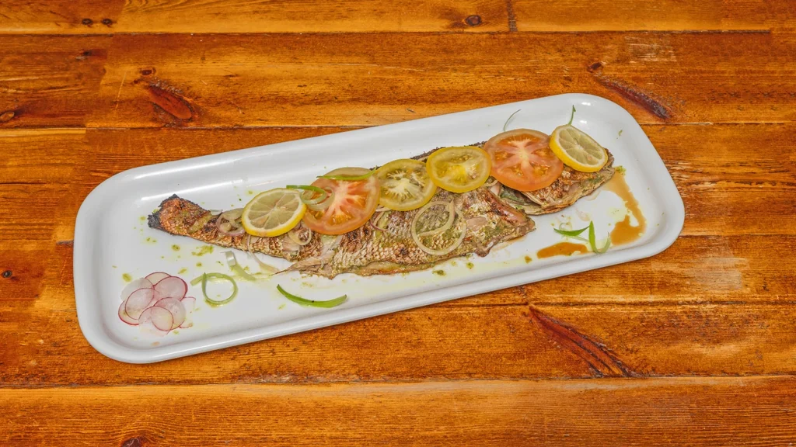
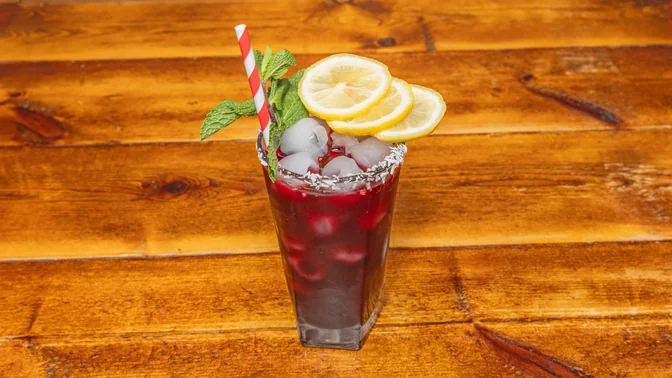

Grilled Prawns
£7.50Prawns cooked on the grill.
A taste of Congo in the heart of Streatham.
Gather around the table for food, drinks and good company.

Tumba Grill brings Congolese flavours to the heart of Streatham. Come for the food, settle in with a drink, and enjoy good company around the table.
Whether you’re discovering Congolese cuisine or coming back for familiar flavours, we look forward to welcoming you.
Come and find us ↗Discover a few favourites, then explore our complete food and drinks menu.
Prawns cooked on the grill.
Traditional grilled meat skewers.

Slow-cooked ribs with a smoky BBQ glaze.
Grilled fish selection; confirm your preferred fish with the team.

A traditional Congolese cassava-leaf dish.

Salted fish, available spiced or non-spiced.

Fluffy fried dough balls drizzled with honey.

A ruby-red hibiscus drink.
From a table in the dining room to an evening in the lounge, take a look around before your visit. Select a photo to see the full view.
Planning a birthday, a celebration or a get-together? Ask the Tumba Grill team about hiring the space for your event.
Let us know your preferred date, approximate guest numbers and what you have in mind. The team can talk you through availability, seating arrangements, food and drinks, and hire pricing.
All arrangements and bookings are confirmed directly with the restaurant.
Call 07404 053691
Find us at 129 Streatham High Road, London SW16 1HJ.
Reservations are required. Call the team to arrange your table. A kids’ menu is available.
Closing times are the following morning.
Kids’ menu available · Typical spend £30–40 per person, as reported by diners. See our menu for individual prices.
Streatham High Road
London · SW16 1HJ
Congolese cuisine
Bar & grill